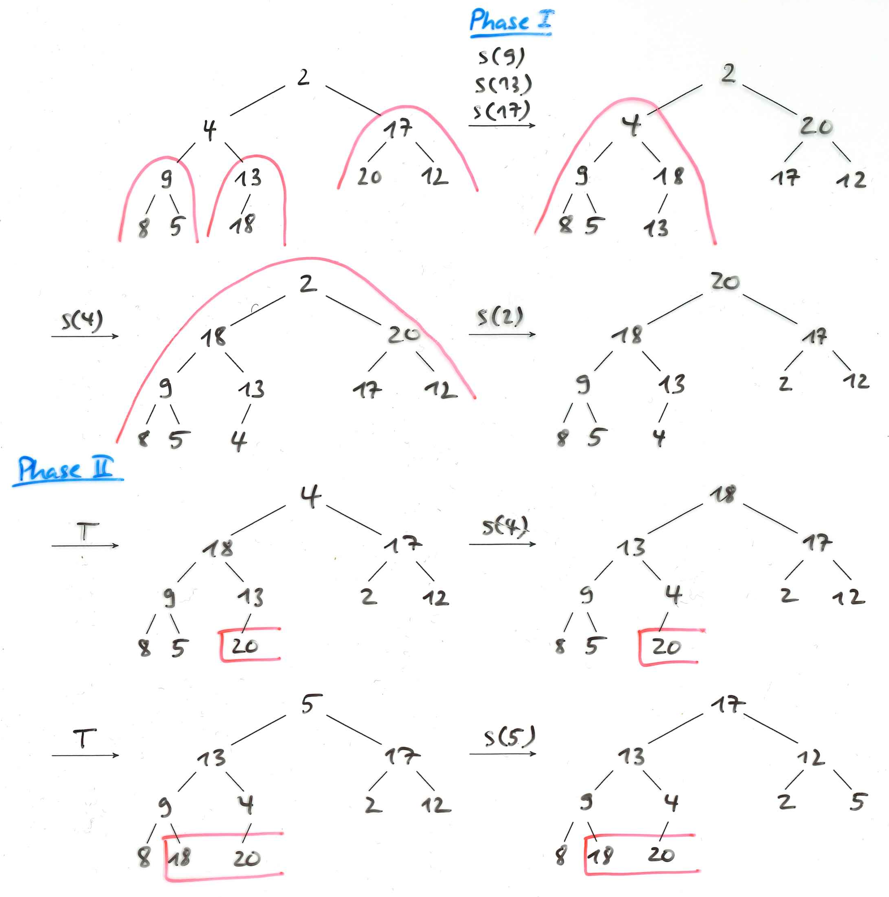

Lösungen zum 8. Übungsblatt
1 Lösung zu Aufgabe 1 (AGS 6.1.8)
9 13 [7] 6 10
i j
9 13 [7] 6 10
i j
6 13 [7] 9 10
i j
6 [7] 13 9 10
j i
[6] 7 | 13 [9] 10
i j i j
[6] 7 13 [9] 10
i,j i j
[6] 7 [9] 13 10
j i j i
======= ===
6 7 9 | [13] 10
i j
10 [13]
j i
=======
2 Lösung zu Aufgabe 2 (AGS 6.2.11)

3 Lösungen zu Aufgabe 3 (AGS 7.1.10)
3.1 Formel (Skript S. 95)
Tabelle[j] = max( {-1} ∪ {m ∣ 0 ≤ m < j ∧ b₀…bₘ-₁ = bⱼ-ₘ…bⱼ-₁ ∧ bₘ ≠ bⱼ} )
3.2 Teilaufgabe a
| Position | 0 | 1 | 2 | 3 | 4 | 5 | 6 | 7 | 8 | 9 |
|---|---|---|---|---|---|---|---|---|---|---|
| Pattern | a | a | b | a | a | a | c | a | a | b |
| Tabelle | -1 | -1 | 1 | -1 | -1 | 2 | 2 | -1 | -1 | 1 |
3.3 Teilaufgabe b
| Position | 0 | 1 | 2 | 3 | 4 | 5 |
|---|---|---|---|---|---|---|
| Pattern | c | b | c | c | b | a |
| Tabelle | -1 | 0 | -1 | 1 | 0 | 2 |
4 Lösungen zu Aufgabe 4 (AGS 7.2.1)
4.1 Teilaufgabe a
d(j,i) │ D i s t a n z
───────┼───────────────
│0→1→2→3→4→5→6→7
│↓↘
D │1 0→1→2→3→4→5→6
│↓ ↓↘
i │2 1 0→1→2→3→4→5
│↓ ↓ ↓↘ ↘ ↘ ↘
n │3 2 1 1→2→3 3→4
│↓ ↓ ↓↘ ↘ ↘ ↘↓↘
s │4 3 2 1→2→3→4 4
│↓ ↓ ↓ ↓↘
t │5 4 3 2 1→2→3→4
│↓ ↓ ↓ ↓ ↓↘
a │6 5 4 3 2 1→2→3
│↓ ↓ ↓↘↓ ↓ ↓↘ ↘
s │7 6 5 4 3 2 2→3
D(Dinstas, Distanz) = 3
4.2 Teilaufgabe b
D i n s t a * s
| | | | | | | |
D i * s t a n z
d i s
D i n s t a s *
| | | | | | | |
D i * s t a n z
d s i